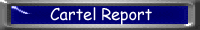

| Headlines | Top Page | New This Week | Recent Reports | News of Nature | Weekly Recipe | Readers Letters | Laboratory News | Back to Nible |
|
|
|
Healing Mud The laboratories located on the southern peninsula of the Topkapi islands of the coast of eastern Australia have recently found a new mud formula with the healing properties which no other drug or natural healant has as a charateristic. This mud has proved to cure even cancer and brain damage, and the only thing which one needs to do with the mud is to use it as a mud pack. Indeed there are those who at the moment do not believe in the healing properties, however I have witnessed it first hand. The experiments were carried out on two lucky voluteers, Mr Sad Drain and Mr Senile Charity both of whom are 45 year olds suffering from a range of problems including leprosey, lung cancer, cerebral haematoma and rickets. 
After only 6 weeks of the healing process, Mr Drain had already re-grown his penis which had previously been unfortunatley removed by a blind doctor in the Sahara desert. Also his legs which had fallen off from several doses of leprosey had grown back too. Mr Charity experience a lung cleansing sensation as the mud worked to remove his lung cancer. Now after just under 3 months treatment, both individuals are deemed to be the healthiest people on the planet. Questions which will undoubtably be asked is how can anyone charge a price on such a widespread natural product found in the epidermal layer of the amazon rainforest. Even the possibility of people travelling there themselves to seek out the magical mud. These are just some of the questions that will be asked at the worldwide conference held later this year in Strasbourg. by Jimble Jee |
Smoke-Net
We at the laboratories have just discovered the next big thing in
tele-communications. The internet will decrease in use to not at all by
the year 2004. This is due to advances in smoke signal technology.
Using a multi-phase varience planar bandwidth compressor it has been possible to produce 3000,000,000,000 puffs of smoke (super smoke pips) per second or 3 terra sspps. To recieve these you have to use a field-locked quantum atomic surgical seporator. Unfortuantly mass usage of the system leads to the complete evaporation of the ozone layer by the year 1998.  But hey, thats the price for technological advance! To get around this problem though we are going to have to use negative smoke. This is like normal smoke but not and has the opposite effect of smoke in that it creates pockets of ultra purified air which are still visable. They can be seen using a clear filter. As they are clear the clear filter shows everything except clear and so there will be blank spots. We are working on integrating the filter into contact lenses. by Pectoral Pip |

Authored by: Edward Yu